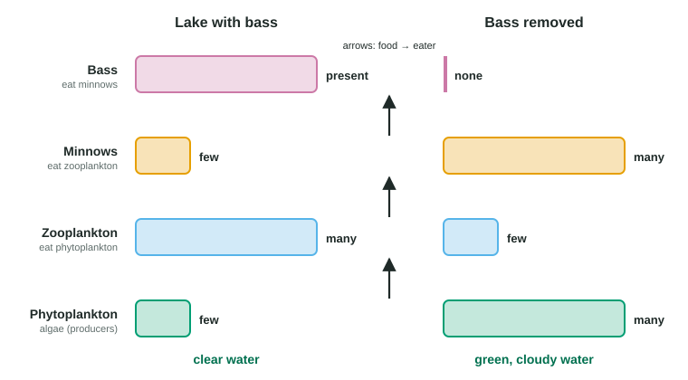

A community is every population living and interacting in one place (topic 8.2). No species lives alone in it: each eats, is eaten by, competes with, or lives on or inside others. This page covers how to describe a community's makeup, the kinds of interactions between species and what each does to the partners, how competition shapes where species live, how predators shape their prey, and how a change at the top of a food web can ripple all the way down.
Describing a community: richness, abundance and diversity
Community structure is which species a community contains (its species composition), how many of each, and how they interact. Two numbers describe the makeup:
- Species richness: the number of species present.
- Relative abundance: each species' share of all the individuals. If 30 of 120 birds counted are robins, the relative abundance of robins is 30 ÷ 120 = 25%. When every species has a similar share, the community is even.
Species diversity combines richness and evenness. Picture two meadows with the same five wildflowers. In one, each kind makes up about a fifth of the plants; in the other, clover makes up nine plants in ten. Richness is the same, but the first meadow is more diverse: pick two plants at random and they are much more likely to be different species.
Simpson's diversity index, D, on the formula sheet, turns this into a number. It is the probability that two individuals picked at random belong to different species. It runs from 0 (a single species) toward 1 (many species, all about equally common). A community can have more species than another and still a lower D, if one species dominates it. You will calculate D step by step in the Simpson's index skill that follows topic 8.6; for now, read it as "higher D, more diverse".
| Sample | Counts of each species | Richness | Evenness | Simpson's D |
|---|---|---|---|---|
| 1 | 25, 25, 25, 25 | 4 | Perfectly even | 0.75 |
| 2 | 85, 5, 5, 5 | 4 | One species dominates | 0.27 |
| 3 | 60, 10, 10, 10, 10 | 5 | Uneven | 0.60 |
Sample 3 has the most species but is less diverse than sample 1, because one species makes up 60% of it.
Interactions between species: who gains, who loses
Score each interaction by its effect on each partner's survival and reproduction: + (helped), − (harmed) or 0 (no effect).
| Interaction | Effects | What happens | Example |
|---|---|---|---|
| Competition (interspecific) | −/− | Both use the same limited resource | Lions and hyenas taking the same prey |
| Predation | +/− | A predator kills and eats its prey | An owl eating a mouse |
| Herbivory | +/− | An animal eats parts of a plant, usually without killing it | A deer browsing on shrubs |
| Parasitism | +/− | A parasite lives on or in a host and feeds on it, usually without killing it quickly | A tick on a deer; a tapeworm in a gut |
| Mutualism | +/+ | Both partners benefit | Bees and the flowers they pollinate; nitrogen-fixing bacteria in root nodules |
| Commensalism | +/0 | One benefits; the other is unaffected | Cattle egrets eating insects that grazing cattle stir up |
Parasitism, mutualism and commensalism are kinds of symbiosis, close long-term living together (topic 2.10). Labels can blur: if a "commensal" turns out to cost its partner a little, the relationship is closer to parasitism. Classify by the evidence about each partner.
Competition and niches
Interspecific competition is competition between different species for the same limited resource; it lowers the growth of both. A species' fundamental niche is the full range of conditions and resources it could use with no other species around. Its realized niche is the part it actually uses when competitors, predators and others are present, usually smaller.
![A rocky shore between the high-tide and low-tide lines. Small barnacles of species A live only in the upper zone, which dries out for long periods; large barnacles of species B cover the lower zone. Bars compare niches: species A's fundamental niche runs the whole way from the high-tide line to the low-tide line, but its realized niche is only the upper zone, because species B crowds it out lower down. Species B's fundamental and realized niches are both the lower zone, because it dries out higher up.](../figures/barnacle-niches.svg)
A classic field experiment on a Scottish shore showed this (Figure 1). Small barnacles (species A) lived only high on the rocks; large barnacles (species B) lived lower down. Where the experimenter scraped off species B, species A settled and thrived all the way down. Species B, by contrast, died when moved high up, where it dried out. So species A's fundamental niche included the lower zone, but competition from faster-growing B (which smothered and pried A off the rock) restricted its realized niche to the upper zone.
Laboratory cultures show the extreme case. Grown alone, two similar species of Paramecium each settle at a steady density. Grown together on the same food, one keeps growing while the other declines to zero. This is the competitive exclusion principle: two species that need exactly the same limiting resources cannot coexist for long, because the one that uses them a little more efficiently keeps gaining.
Yet many similar species do live together. They divide the resource, which is resource partitioning: several warbler species feed in the same spruce trees, but each mostly at a different height or part of the branch; one species of Paramecium can coexist with another that feeds near the bottom of the tube. Where two seed-eating finch species live on the same island, their beak sizes often differ more than where each lives alone, so they eat different seed sizes. This character displacement is the result of natural selection favoring individuals that compete less.
Predators, herbivores and prey defenses
Predation (+/−) removes prey and so affects prey numbers (topic 8.4 showed predator and prey cycles). It also shapes prey traits, because individuals that are hard to find, catch or eat survive to breed. Prey defenses include:
- Camouflage: blending in, like a stick insect.
- Mechanical and chemical defenses: porcupine quills, the toxins in monarch butterflies and poison frogs.
- Warning coloration (aposematic coloration): bright colors that toxic or dangerous animals display. A predator that tries one learns to avoid the pattern.
- Batesian mimicry: a harmless species looks like a harmful one. Hoverflies are striped like wasps but cannot sting.
- Müllerian mimicry: two or more harmful species share a similar pattern, so predators learn to avoid all of them from fewer encounters, and fewer of each species die while predators learn.
Herbivory (+/−) is the plant version. A herbivore usually eats part of a plant without killing it, and plants defend themselves with thorns, tough or hairy leaves, and toxic chemicals such as nicotine and caffeine.
Trophic cascades: top-down and bottom-up control

Because each level of a food web eats the one below, a change at the top can pass down through every level: a trophic cascade (Figure 2). Remove the bass from a lake, and minnows multiply; the minnows eat down the zooplankton; with few zooplankton grazing, phytoplankton bloom and the water turns green. Add bass, and the chain runs the other way. Control of a community from the top of the food web is top-down control.
Communities are also limited from below. Add nutrients to a pond and the algae grow more, which can feed more zooplankton and more fish: bottom-up control, where the supply of nutrients and producers sets how much the levels above can hold. Most communities feel both.
Worked example: top-down or bottom-up? In six experimental ponds, ecologists added phosphate to three. Algae, zooplankton and small fish all increased compared with the unfertilized ponds. In three other ponds, they added a predatory fish; small fish decreased, zooplankton increased and algae decreased.
Fertilized ponds: every level moved in the same direction as the change at the base: bottom-up control.
Predator ponds: the levels alternated, down, up, down, starting from the top: a trophic cascade, top-down control.
Common mistakes
- "Richness and diversity mean the same thing." Diversity also counts evenness.
- "The realized niche is larger than the fundamental niche." It is the same or smaller; other species can only take away from it.
- "Competitive exclusion means one species kills the other." It means one outgrows the other for a shared resource.
- "Parasites usually kill their hosts quickly." Most feed for a long time without killing.
- "Mimics choose to look like the model." Mimicry evolves because predators avoid the look-alikes, so they survive and reproduce more.